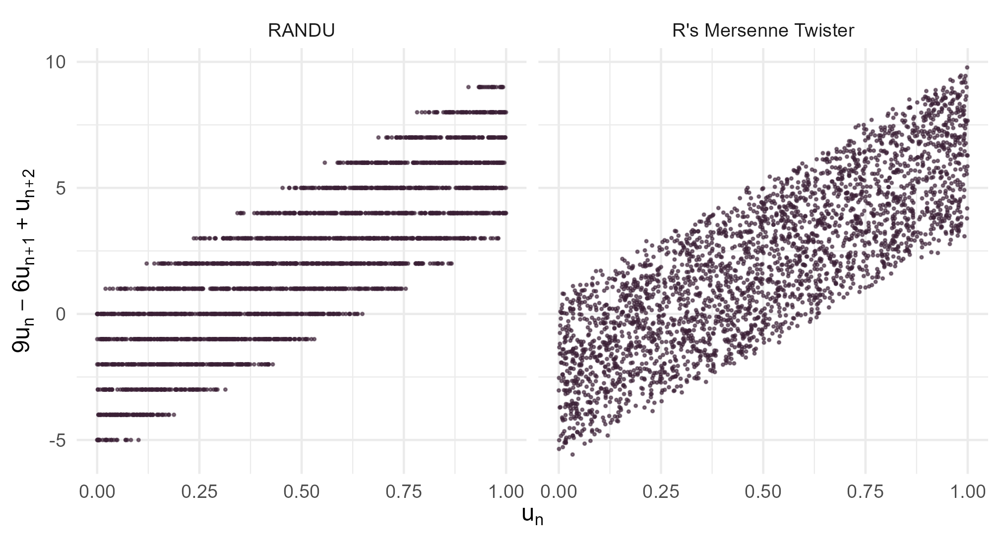
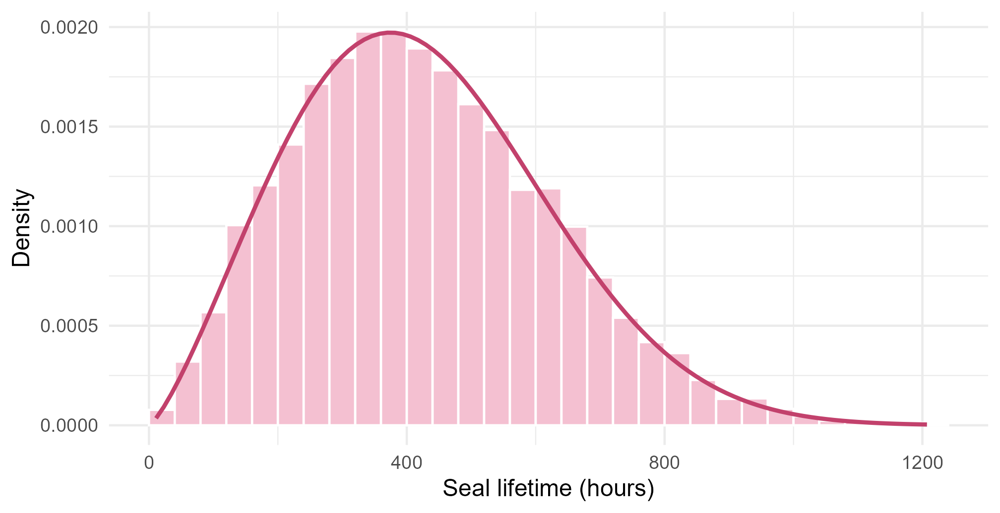

Module 4 · Lesson 3 of 14 Week 63 of 160 About 5–7 hours
Random number generation
Where random numbers come from, and how to make the ones you need
See how a computer makes pseudo-random numbers with a linear congruential generator, meet RANDU, the famous bad generator whose triples fall on 15 planes, use seeds for reproducible simulations, test randomness with the chi-square test, and turn uniform numbers into Weibull failure times and discrete demands with the inverse-transform method.
The plant has 36 pumps, and their mechanical seals fail at unpredictable times. The maintenance team wants to know how many spare seals to keep in stock: too few, and a pump waits days for a part; too many, and money sits on a shelf. The usual way to answer questions like that is simulation: imagine thousands of years of seal failures, and count how often the stock runs out.
Every simulation starts from random numbers. But a computer follows its instructions exactly, and does the same thing every time. So where do its random numbers come from? This lesson opens up the generator, and then shows how to turn its numbers into the random failure times and demands that a simulation needs.
A machine that can’t do anything unpredictable, making unpredictable numbers? Sounds like a magic trick. Let’s see how it’s done!
In this lesson you’ll:
- build a pseudo-random number generator, and see its pattern
- meet RANDU, a famous bad generator
- use seeds to make simulations reproducible, and avoid a common seed bug
- test a generator’s output for randomness
- turn uniform random numbers into Weibull failure times with the inverse-transform method
- simulate a discrete distribution, and plan the spare seals
Pseudo-random numbers
Computers make pseudo-random numbers: numbers that come from a fixed formula, but look random. The oldest widely used formula is the linear congruential generator (LCG). Start from a whole number x_0, the seed, and repeat
x_{n+1} = (a\,x_n + c) \bmod m,
where “mod m” means the remainder after dividing by m (R’s %%). Every x_n is a whole number from 0 to m - 1, and u_n = x_n/m is a number between 0 and 1. With well-chosen constants, the u_n look like independent draws from the uniform distribution.
There are only m possible values, so the sequence must eventually repeat, and from then on it repeats forever. The length of the cycle is the generator’s period.
Your turn. Write a tiny LCG with a = 5, c = 3 and m = 16, and generate 20 numbers from the seed 1.
Take the remainder after dividing by m.
lcg <- function(n, seed, a = 5, c = 3, m = 16) {
x <- numeric(n)
for (i in 1:n) {
seed <- (a * seed + c) %% m
x[i] <- seed
}
x
}
lcg(20, seed = 1)8, 11, 10, 5, 12, … : it looks patternless, and it visits every number from 0 to 15 once. Then, at the 17th number, it starts again: 8, 11, 10, 5. The period is 16, the longest possible with m = 16. Real LCGs use m = 2^{31} or more, so their period is billions of numbers long, but they still repeat in the end.
A famous bad generator
In the 1960s, IBM’s computers shipped with an LCG called RANDU: a = 65539, c = 0 and m = 2^{31}. It was fast, and its numbers passed the usual tests. It was used for years, in thousands of scientific studies. Then people noticed that it has a fatal flaw. Because 65539 = 2^{16} + 3, every three consecutive numbers satisfy
9\,u_n - 6\,u_{n+1} + u_{n+2} = \text{a whole number}.
So if you plot the triples (u_n, u_{n+1}, u_{n+2}) as points in a cube, they don’t fill it: they all lie on just 15 parallel planes, with nothing in between. Any simulation in three or more dimensions, such as a particle moving in space, was quietly wrong.
Your turn. The setup code has a randu() function. Generate 3,002 numbers and compute the combination for 3,000 triples. How many different values does it take?
The combination is 9u_n - 6u_{n+1} + u_{n+2}.
u <- randu(3002)
k <- 9 * u[1:3000] - 6 * u[2:3001] + u[3:3002]
table(round(k, 6))Only 15 values, the whole numbers from −5 to 9: one for each plane. A good generator would give 3,000 different values, spread over the range from −6 to 10.
Here’s the same combination for RANDU and for R’s own generator, plotted against u_n:
u <- randu(3002)
set.seed(4032)
v <- runif(3002)
triples <- rbind(
data.frame(generator = "RANDU", u1 = u[1:3000], k = 9 * u[1:3000] - 6 * u[2:3001] + u[3:3002]),
data.frame(generator = "R's Mersenne Twister", u1 = v[1:3000], k = 9 * v[1:3000] - 6 * v[2:3001] + v[3:3002])
)
triples$generator <- factor(triples$generator, levels = c("RANDU", "R's Mersenne Twister"))
ggplot(triples, aes(x = u1, y = k)) +
geom_point(size = 0.35, alpha = 0.6, color = "#3A1F35") +
facet_wrap(~ generator) +
labs(x = expression(u[n]), y = expression(9*u[n] - 6*u[n+1] + u[n+2])) +
theme_minimal(base_size = 12)
The lesson: a generator can look fine in one dimension and be badly wrong in three. All LCGs have some such structure, which is why modern software uses better generators.
Seeds and R’s generator
R’s default generator is the Mersenne Twister, from 1998. It’s still deterministic, but its period is 2^{19937} - 1, a number with 6,002 digits, and its output passes almost every test of randomness that’s been invented. You can see what R is using:
RNGkind()
#> [1] "Mersenne-Twister" "Inversion" "Rejection"The three parts are the uniform generator, the method for normal numbers (Lesson 4.4 has more about that), and the method sample() uses.
Because the generator is deterministic, the same seed always gives the same numbers. set.seed() sets it. That’s what makes a simulation reproducible: anyone who runs your code with your seed gets exactly your results. Set the seed once, at the start, and then let the generator run.
The classic seed bug is to set it in the wrong place. Here’s a function that simulates the mean of 10 measurements, with the seed set inside it:
one_batch <- function() {
set.seed(1)
mean(rnorm(10))
}
replicate(5, one_batch())
#> [1] 0.1322028 0.1322028 0.1322028 0.1322028 0.1322028Five “random” means, all identical: each call restarts the generator from the same place. A simulation study written this way would report a standard error of zero.
Your turn. Fix it: take set.seed() out of the function, and set the seed once, to 2026, before the simulation.
set.seed(2026).
one_batch <- function() mean(rnorm(10))
set.seed(2026)
replicate(5, one_batch())Five different means, and run it again and you get the same five: reproducible and random. The simulation continues the generator’s stream from one call to the next, as it should.
Testing randomness
How do you know a generator’s numbers look random? You test them, as you’d test any hypothesis. If the numbers are uniform, then about a tenth of them should fall between 0 and 0.1, a tenth between 0.1 and 0.2, and so on. The chi-square goodness-of-fit test compares the counts in each bin with the expected counts, here 100 per bin for 1,000 numbers:
\chi^2 = \sum_{\text{bins}} \frac{(\text{observed} - \text{expected})^2}{\text{expected}},
with 9 degrees of freedom for 10 bins. A tiny p-value says the numbers don’t look uniform.
Your turn. Test 1,000 numbers from R’s generator, with 10 equal bins.
Ten equal bins between 0 and 1 are 0.1 wide.
set.seed(4031)
u <- runif(1000)
counts <- table(cut(u, breaks = seq(0, 1, by = 0.1)))
counts
chisq.test(counts)$p.valueThe counts run from 84 to 115, and the p-value is 0.35: no evidence against uniformity. But RANDU passes this test too (with 10,000 numbers, its p-value is 0.45), because its flaw is in the triples, not in the single numbers. So generators are checked with batteries of hundreds of tests, looking at pairs, triples, gaps, runs and more. The Mersenne Twister passes nearly all of them, and RANDU fails many.
The inverse-transform method
Generators make uniform numbers between 0 and 1. A simulation needs other distributions: seal lifetimes, demands, measurement errors. The simplest way to convert is the inverse-transform method: if U is uniform on (0, 1) and F is a continuous cumulative distribution function (CDF), then
X = F^{-1}(U)
has the CDF F. In words: pick a random height on the CDF’s vertical axis, and read off the value on the horizontal axis where the CDF reaches that height. Values where the CDF rises steeply, where the density is high, catch the most heights.
NoteGo deeper: why it works
F is increasing, so F^{-1}(U) \le x exactly when U \le F(x). Therefore
P(X \le x) = P\big(F^{-1}(U) \le x\big) = P\big(U \le F(x)\big) = F(x),
because P(U \le t) = t for a uniform U. So X has the CDF F. The reverse is true as well: if X has a continuous CDF F, then F(X) is uniform. That’s the probability integral transform, and it’s behind Q-Q plots and many goodness-of-fit tests.
Seal lifetimes are often described by the Weibull distribution, whose CDF is
F(x) = 1 - \exp\!\left[-\left(\frac{x}{\lambda}\right)^{k}\right], \qquad x > 0,
with a scale \lambda and a shape k. A shape above 1 means that seals wear out: the older a seal, the more likely it is to fail soon. Solving u = F(x) for x gives x = \lambda\,[-\log(1 - u)]^{1/k}. And since 1 - U is uniform whenever U is, \lambda\,[-\log U]^{1/k} works just as well.
Your turn. On the test rig, seal lifetimes follow a Weibull distribution with shape 2.3 and scale 480 hours. Generate five lifetimes by the inverse-transform method, and compare them with R’s rweibull() from the same seed.
The exponent is one over the shape: 1 / shape.
shape <- 2.3
scale <- 480 # hours
set.seed(42)
mine <- scale * (-log(runif(5)))^(1 / shape)
set.seed(42)
theirs <- rweibull(5, shape, scale)
rbind(mine, theirs)Identical, to the last digit: 168, 146, 529, 231 and 337 hours. That’s because R’s rweibull() is the inverse-transform method, with exactly this formula. Many of R’s random number functions are just a uniform generator plus a clever transformation.
Here are 10,000 lifetimes made the same way, with the Weibull density on top:
set.seed(42)
lifetimes <- data.frame(hours = 480 * (-log(runif(10000)))^(1 / 2.3))
ggplot(lifetimes, aes(x = hours)) +
geom_histogram(aes(y = after_stat(density)), binwidth = 40, boundary = 0, fill = "#F4C0D1", color = "white") +
stat_function(fun = dweibull, args = list(shape = 2.3, scale = 480), color = "#C2416C", linewidth = 1) +
labs(x = "Seal lifetime (hours)", y = "Density") +
theme_minimal(base_size = 12)
Discrete distributions
The inverse-transform method works for discrete distributions too. From the plant’s maintenance records, the number of seals needed in a month has this distribution:
| Seals needed | 0 | 1 | 2 | 3 | 4 |
|---|---|---|---|---|---|
| Probability | 0.30 | 0.36 | 0.22 | 0.09 | 0.03 |
| Cumulative | 0.30 | 0.66 | 0.88 | 0.97 | 1.00 |
Divide the interval from 0 to 1 into pieces with these lengths. A uniform number u below 0.30 means 0 seals, between 0.30 and 0.66 means 1 seal, and so on. In other words, the number of seals is how many cumulative probabilities are at or below u. R’s findInterval(u, breaks) counts exactly that, for a whole vector of u at once.
Your turn. Simulate 10,000 months of seal demand, and compare the proportions with the probabilities.
The breaks are the cumulative probabilities, cumsum(p).
p <- c(0.30, 0.36, 0.22, 0.09, 0.03) # P(0, 1, 2, 3 or 4 seals)
set.seed(7)
u <- runif(10000)
seals <- findInterval(u, cumsum(p))
round(table(seals) / 10000, 3)0.301, 0.358, 0.220, 0.088 and 0.033: all within a percentage point of the probabilities, as they should be with 10,000 months. sample(0:4, 10000, replace = TRUE, prob = p) does the same job.
Challenge round
Challenge 1 · How many spare seals? The spare seals are ordered once a year. Simulate 10,000 years, each of 12 months, and estimate the chance that a stock of 20 seals isn’t enough.
Each simulated year has 12 months, so it needs runif(12).
p <- c(0.30, 0.36, 0.22, 0.09, 0.03)
set.seed(12)
yearly <- replicate(10000, sum(findInterval(runif(12), cumsum(p))))
mean(yearly) # the average number of seals needed in a year
mean(yearly > 20) # the chance that 20 seals aren't enoughA year needs 14.3 seals on average (the exact mean is 12 \times 1.19 = 14.28). But a stock of 14 would run out almost half the time. With 20 seals, the chance of running out is 5.0%, and with 22, it’s 1.5%. The team can now choose its risk. How precise is that 5.0%? Lesson 5 shows how to put an error bar on a simulation result.
Challenge 2 · A triangular distribution. Engineers often describe an uncertain quantity with three numbers: the lowest, the most likely and the highest value. The next plant turnaround will take between 10 and 18 days, most likely 12. That’s a triangular distribution, whose density rises in a straight line from 10 to 12, and falls in a straight line to 18. Its CDF reaches F_m = (12 - 10)/(18 - 10) = 0.25 at the mode, and inverting it gives
x = \begin{cases} \text{lo} + \sqrt{u\,(\text{hi} - \text{lo})(\text{mode} - \text{lo})} & \text{if } u < F_m, \\ \text{hi} - \sqrt{(1 - u)(\text{hi} - \text{lo})(\text{hi} - \text{mode})} & \text{otherwise.} \end{cases}
Complete the generator, and estimate the mean duration and the chance that the turnaround takes more than 15 days.
The last factor is hi - mode.
lo <- 10; mode <- 12; hi <- 18
r_triangle <- function(n) {
u <- runif(n)
Fm <- (mode - lo) / (hi - lo)
ifelse(u < Fm,
lo + sqrt(u * (hi - lo) * (mode - lo)),
hi - sqrt((1 - u) * (hi - lo) * (hi - mode)))
}
set.seed(11)
x <- r_triangle(10000)
c(mean = mean(x), more_than_15 = mean(x > 15))A mean of 13.36 days (the exact mean is (10 + 12 + 18)/3 = 13.33), and an 18.5% chance of more than 15 days (exactly 3^2/(8 \times 6) = 0.1875). The mean is well above the most likely value, 12 days, because the long tail toward 18 pulls it up. Plans built on the “most likely” duration run late more often than not.
Quick quiz
1. What’s a pseudo-random number generator?
Deterministic is the point: it’s what makes simulations reproducible.
2. A function sets set.seed(1) and then simulates. What happens when you call it 1,000 times in a simulation?
Each call restarts the generator from the same seed. Set the seed once, outside.
3. What was wrong with RANDU?
It passed one-dimensional tests. Its flaw only shows up when you look at several numbers together.
4. 1,000 numbers pass a chi-square test of uniformity, with a p-value of 0.35. What can you conclude?
That’s why generators are tested with batteries of many different tests.
5. If U is uniform on (0, 1), what is the distribution of F^{-1}(U)?
That’s the inverse-transform method: P(F^{-1}(U) \le x) = P(U \le F(x)) = F(x).
6. The exponential distribution has CDF F(x) = 1 - e^{-\lambda x}. Which formula generates it from a uniform U?
Solve u = 1 - e^{-\lambda x} for x. Since 1 - U is uniform too, -\log(U)/\lambda works as well. It’s a Weibull with shape 1.
Wrap-up
You can now make the random numbers a simulation needs. Here’s what you’ve learned:
- Pseudo-random numbers come from deterministic formulas, such as the linear congruential generator x_{n+1} = (a x_n + c) \bmod m. They repeat after their period.
- RANDU shows that a generator can look random one number at a time and still be badly patterned: its triples fall on 15 planes. R’s default, the Mersenne Twister, has a period of 2^{19937} - 1 and passes nearly every test.
- Seeds make simulations reproducible. Set the seed once, at the start, never inside a function that’s called repeatedly.
- Testing randomness is hypothesis testing: a chi-square test checks uniformity, but no single test can prove a generator good.
- The inverse-transform method, X = F^{-1}(U), turns uniform numbers into any distribution whose CDF you can invert. R’s
rweibull()is exactly this. - Discrete distributions by inversion:
findInterval(u, cumsum(p)). A stock of 20 seals runs out in about 5% of years.
TipPractice in RStudio (optional, about an hour)
- See RANDU’s planes in 3D. Install
plotly, make 10,000 RANDU triples, and plot them withplotly::plot_ly(x = u1, y = u2, z = u3, type = "scatter3d", mode = "markers", marker = list(size = 1)). Rotate the cube with the mouse until the 15 planes appear. Do the same withrunif(). - Other generators. Run
RNGkind("L'Ecuyer-CMRG"), thenset.seed(1); runif(3). Compare with the default generator’sset.seed(1); runif(3). Switch back withRNGkind("default"). (L’Ecuyer’s generator is the one used for parallel simulations, because it can split into many independent streams.) - Exponential failures. Generate 10,000 exponential lifetimes with rate 0.002 per hour by inversion, and compare them with
rexp(10000, 0.002)in a Q-Q plot (qqplot()). Are the numbers identical, as withrweibull()? (R’srexp()uses a different algorithm.) - An older plant. At an older plant, the monthly demand is 0, 1, 2, 3 or 4 seals with probabilities 0.20, 0.30, 0.30, 0.15 and 0.05. How many seals should it stock to keep the chance of running out below 5%?
NoteKey words from this lesson
- Pseudo-random numbers
- Numbers produced by a deterministic formula that look like independent random draws.
- Seed
- The starting value of a pseudo-random number generator. The same seed gives the same sequence.
- Linear congruential generator
- A generator of the form x_{n+1} = (a x_n + c) \bmod m.
- Period
- The length of a generator’s cycle, after which its sequence repeats.
- Mersenne Twister
- R’s default generator, with a period of 2^{19937} - 1.
- Inverse-transform method
- Generating a random variable as F^{-1}(U), where U is uniform and F is the target CDF.
- Weibull distribution
- A distribution for lifetimes, with a scale and a shape. A shape above 1 means wear-out failures.
NoteWant to read more?
- Roger Peng, Advanced Statistical Computing, sections 6.1, “Random number generation” and 6.2, “Non-uniform random numbers”. Linear congruential generators and the inverse-transform method, briefly and clearly.
- R’s help page for random number generation,
?Random. The generators R offers, and howset.seed()works. - Luc Devroye, Non-Uniform Random Variate Generation (1986), free online. The encyclopedia of methods for turning uniform numbers into everything else.